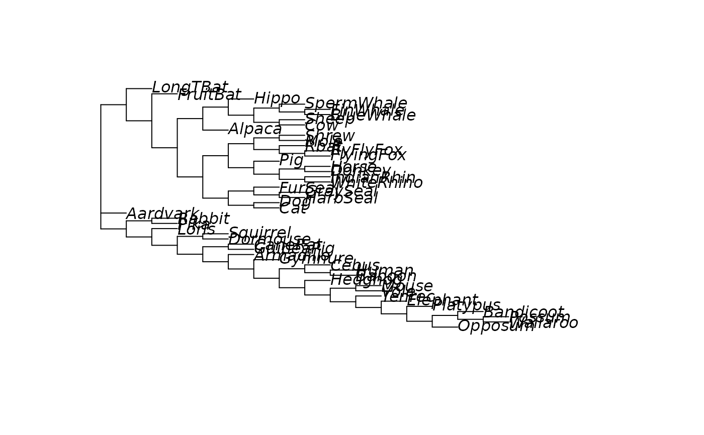

These function superTree allows the estimation of a supertree from a
set of trees using either Matrix representation parsimony, Robinson-Foulds
or SPR as criterion.
Usage
superTree(tree, method = "MRP", rooted = FALSE, trace = 0,
start = NULL, multicore = FALSE, mc.cores = NULL, ...)Arguments
- tree
an object of class
multiPhylo- method
An argument defining which algorithm is used to optimize the tree. Possible are "MRP", "RF", and "SPR".
- rooted
should the resulting supertrees be rooted.
- trace
defines how much information is printed during optimization.
- start
a starting tree can be supplied.
- multicore
logical, whether models should estimated in parallel.
- mc.cores
The number of cores to use, i.e. at most how many child processes will be run simultaneously.
- ...
further arguments passed to or from other methods.
Details
The function superTree extends the function mrp.supertree from Liam
Revells, with artificial adding an outgroup on the root of the trees. This
allows to root the supertree afterwards. The functions is internally used in
DensiTree. The implementation for the RF- and SPR-supertree are very basic
so far and assume that all trees share the same set of taxa.
References
Baum, B. R., (1992) Combining trees as a way of combining data sets for phylogenetic inference, and the desirability of combining gene trees. Taxon, 41, 3-10.
Ragan, M. A. (1992) Phylogenetic inference based on matrix representation of trees. Molecular Phylogenetics and Evolution, 1, 53-58.
Author
Klaus Schliep klaus.schliep@gmail.com Liam Revell
Examples
data(Laurasiatherian)
set.seed(1)
bs <- bootstrap.phyDat(Laurasiatherian,
FUN = function(x) upgma(dist.hamming(x)), bs=50)
mrp_st <- superTree(bs, minit = 25, maxit=50)
plot(mrp_st)

# \donttest{
rf_st <- superTree(bs, method = "RF")
spr_st <- superTree(bs, method = "SPR")
# }